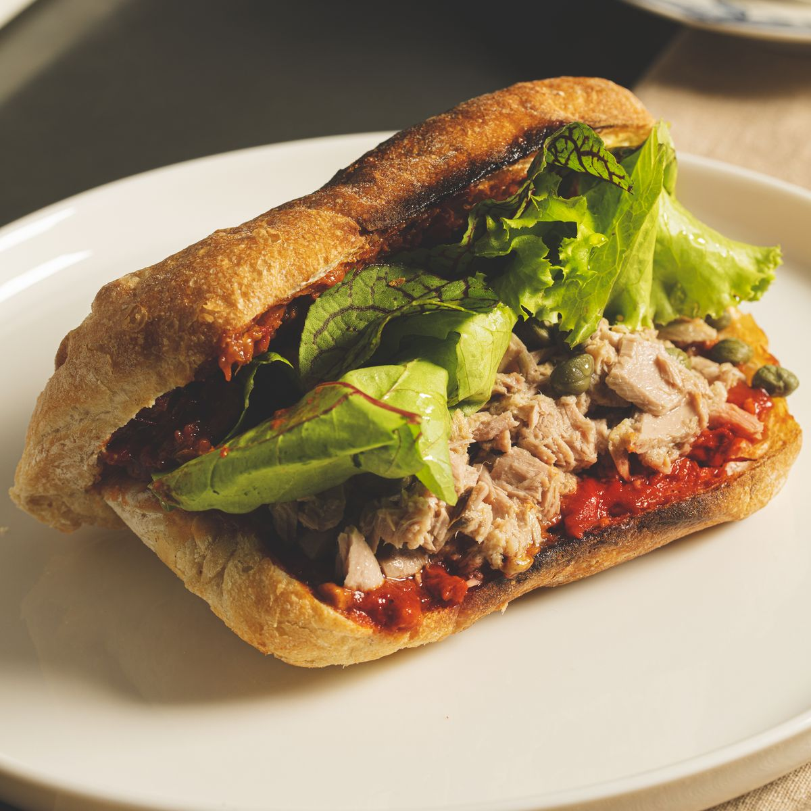

Hamsi Ekmek
₺340
Taze, lezzetli, günlük.
 Detay
src="../assets/balik-ekmekler/alabalik-ekmek.jpg"
alt="Alabalık Ekmek"
Detay
src="../assets/balik-ekmekler/alabalik-ekmek.jpg"
alt="Alabalık Ekmek"
Alabalık Ekmek
Şefin önerisi.
href="../product.html?name=Alabal%C4%B1k%20Ekmek&category=Bal%C4%B1k%20Ekmekler&desc=Alabalık%20ile%20hazırlanmış%20nefis%20balık%20ekmeği%2C%20şefin%20özel%20tarifi.&companions=Pide%2C%20Kavun%2C%20Fıstık" src="../assets/balik-ekmekler/cupra-ekmek.jpg" alt="Çupra Ekmek"